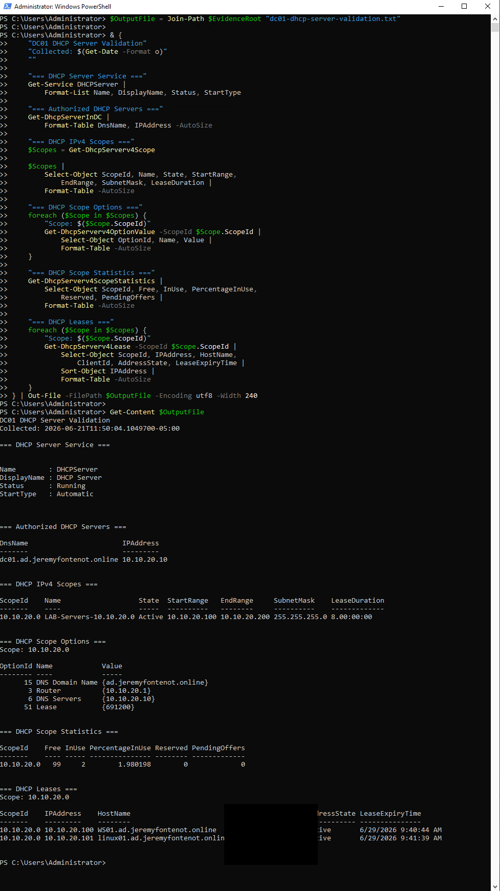

Infrastructure and identity
Proxmox host, bridges, storage, four VM configurations, a single-domain AD forest, DC01 global catalog status, and all five FSMO roles.
Validated June 21, 2026 · personal nonproduction lab
One Dell PowerEdge R710, Proxmox VE, pfSense, Windows Server 2022, Active Directory, WS01, Linux01, snapshots, scheduled backups, and SHA-256 verified evidence.
Executive overview
The lab demonstrates practical virtualization, routing, identity, Windows administration, Linux administration, security controls, backup operations, and evidence handling. Configuration files prove configured state; service queries prove service state at collection time; archive listings prove backup presence but not a successful restore.
Proxmox host, bridges, storage, four VM configurations, a single-domain AD forest, DC01 global catalog status, and all five FSMO roles.
Ubuntu Server 26.04 LTS, static networking, realmd, SSSD, Kerberos, SSH, UFW, sudo delegation, and QEMU guest-agent state.
Backups were inventoried and hashed; an isolated restore remains outstanding. Firewall intent is documented without claiming an independently tested exclusive source restriction.
Architecture summary
Physical and virtual inventory
| Component | Role | Identifier | Status |
|---|---|---|---|
| Dell PowerEdge R710 | Physical virtualization host | PowerEdge R710 | Implemented |
| Proxmox VE | Hypervisor, storage, snapshots, backup | 192.168.0.242 | Validated |
| pfSense VM 100 | Firewall, routing, NAT, segmentation | 192.168.0.205 / 10.10.20.1 | Validated configuration |
| DC01 VM 200 | AD DS, DNS, DHCP, Group Policy | 10.10.20.10 | Validated |
| WS01 VM 300 | Windows domain workstation | DHCP client | Screenshot-supported |
| Linux01 VM 400 | Ubuntu server and domain member | 10.10.20.20 | Validated |
Network addressing
| System or service | Address | Gateway / DNS | Evidence strength |
|---|---|---|---|
| Proxmox management | 192.168.0.242/24 on vmbr0 | Gateway 192.168.0.1 | Command-verified |
| pfSense WAN | 192.168.0.205/24 | Upstream via vmbr0 | Configuration evidence |
| pfSense LAN | 10.10.20.1/24 | Internal gateway | Configuration evidence |
| DC01 | 10.10.20.10/24 | DNS 10.10.20.10 | Command-verified |
| Linux01 | 10.10.20.20/24 | Gateway 10.10.20.1; DNS 10.10.20.10 | Command-verified |
| DHCP scope | 10.10.20.0/24 | Pool 10.10.20.100–10.10.20.200 | Command-verified |
Proxmox platform and VM inventory
The host export identifies Proxmox VE 9.2.3, vmbr0 as the management/upstream bridge, vmbr1 as the internal bridge, local and thin-provisioned storage, and a dedicated ext4 backup disk mounted at /mnt/pve/backup-hdd.
| VM | CPU | Memory | Disk | Network |
|---|---|---|---|---|
| 100 · pfsense-fw | 2 cores | 4096 MB | 32 GB | vmbr0 and vmbr1 |
| 200 · dc01 | 2 cores | 4096 MB | 80 GB | vmbr1 |
| 300 · ws01 | 2 cores | 4096 MB | 80 GB | vmbr1 |
| 400 · linux01 | 2 cores | 2048 MB | 40 GB | vmbr1, firewall enabled |
pfSense segmentation
VM 100 connects its WAN adapter to vmbr0 and its LAN adapter to vmbr1. This supports the segmented topology and routing role. A retained snapshot is named pfsense-rdp-nat-restricted; the snapshot description is configuration evidence, not an independent end-to-end test of exclusive source restriction.
Windows Server, identity, and administration
DC01 runs Windows Server 2022 Standard Evaluation, build 20348, for ad.jeremyfontenot.online with NetBIOS name JFAD.
Schema Master, Domain Naming Master, PDC Emulator, RID Master, and Infrastructure Master were returned by command output.
The DNS service was running with secure dynamic updates for the domain zone and an AD-integrated reverse zone. Forward and reverse tests returned DC01 and Linux01.
Pool 10.10.20.100–10.10.20.200; router 10.10.20.1; DNS 10.10.20.10; domain ad.jeremyfontenot.online.
Evidence lists password, lockout, firewall, RDP, PowerShell logging, audit, update, server, workstation, controlled-local-admin, and user-drive-map GPOs.
Evidence supports controlled local administrators and AD-group-based SMB permissions. Permissions are described as lab validation, not production access governance.
Earlier screenshots support RDP enablement and a successful DC01-to-WS01 TCP/DNS test. The current evidence does not prove exclusive external source restriction.


Linux01
Linux01 uses 10.10.20.20/24, gateway 10.10.20.1, DNS 10.10.20.10, and search domain ad.jeremyfontenot.online.
The realm is configured as a Kerberos member; the domain user resolves through NSS; SSSD was enabled and active.
A valid TGT for the documented domain principal was listed at collection time. The temporary ticket-cache identifier is redacted in the public text copy.
UFW was active with default deny for incoming traffic and a rule allowing SSH from the internal subnet. This proves the displayed rule, not exhaustive external testing.
The base sudoers file and domain-admin drop-in parsed successfully; the delegated sudo validation returned root.
The package was installed, the service was active, and no reboot was required at collection time.

Snapshots and backup job
Snapshot listings exist for VMs 100, 200, 300, and 400. The enabled backup-critical-lab-vms job runs Sunday at 02:00 in snapshot mode, uses zstd compression, targets backup-hdd, and includes VMs 100, 200, 300, and 400.
Evidence integrity
5c1eff369a0055338808a93c025847cc5997db4f04614a56ede33b43f9e9b8db
Matched the supplied known hash.
e8a5a40a6960557383ccb152af2da71053e50382d8287d632b9ed5ad85cb7060
Matched the supplied known hash and was recorded on dedicated backup storage.
1,400,031 bytes
03a605517e2a6ebeb805b7e0f74bd1ec06c664debbdb39b99e09aecc62e4845a

Skills demonstrated
Limitations
Backup archive presence and job membership are validated. A successful isolated restore has not been demonstrated.
The displayed configuration and snapshot description support restriction intent; exclusive source behavior was not independently tested.
DC01 holds all FSMO roles and is the only domain controller. The lab is not designed for production availability.
Next steps
{kind=link}